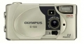

C-120 采用5片5组镜头结构设计，配备了1/3.2的CCD影像传感器，最大可拍摄1600x1208静止图像，支持短片拍摄，使用SM存储卡，内置8MB存储空间，总像素为211万，有效像素为196万。
一部还好的老机器，即使现在还是有很多人在使用
没什么大的优点，性价比吧，也没有了，呵呵， 应该来说故障率比较低吧
过去的就不多说了，卡与机器的配合不是很好，有时会出问题，
还算可以的一部机:D 性价比高！ 成像算过得去！ 轻巧方便！ [hopefun 编辑于 2003-04-04 00:03]
自拍效果极好，电池耐用！
晚上就只有自拍会好点！ 觉得太过简单！